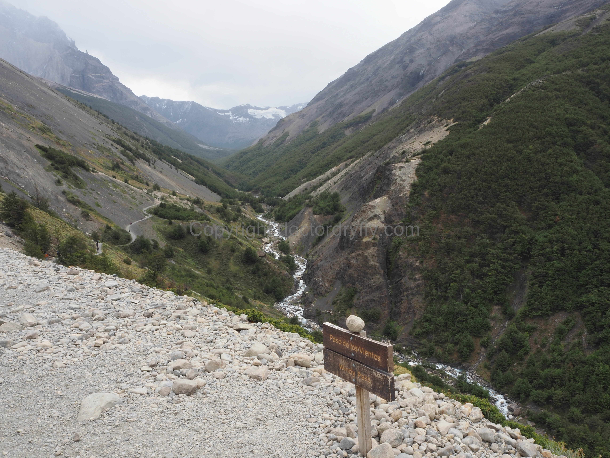
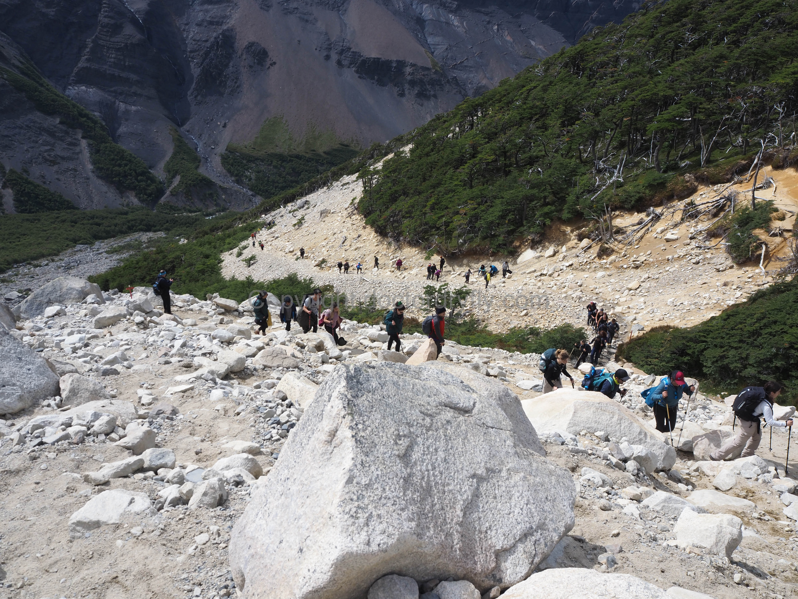
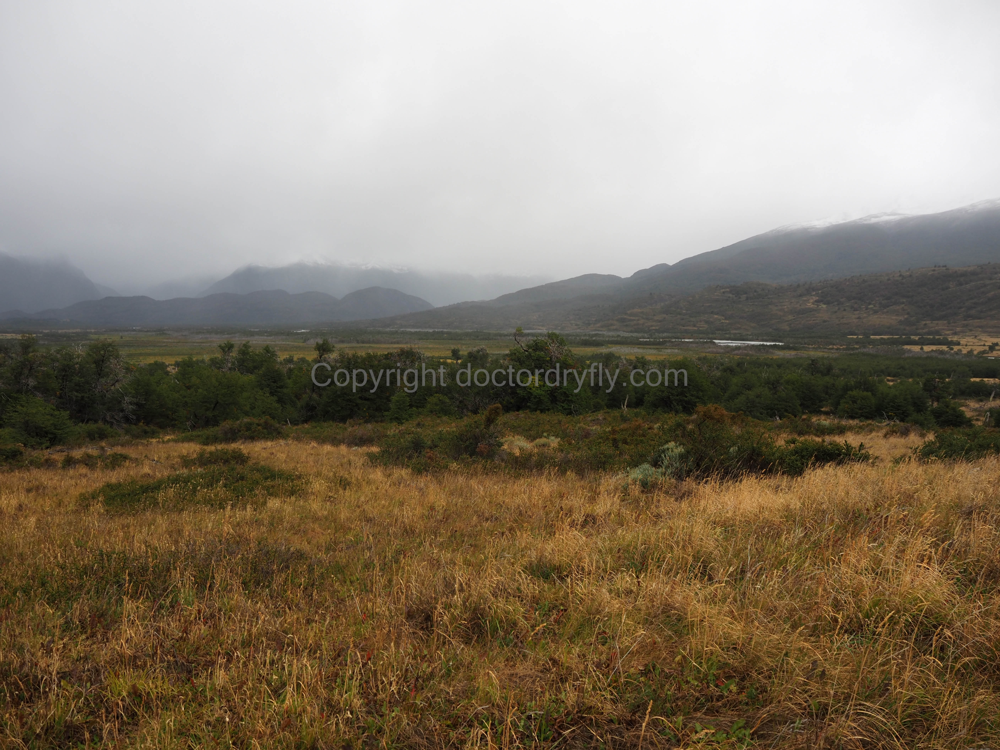
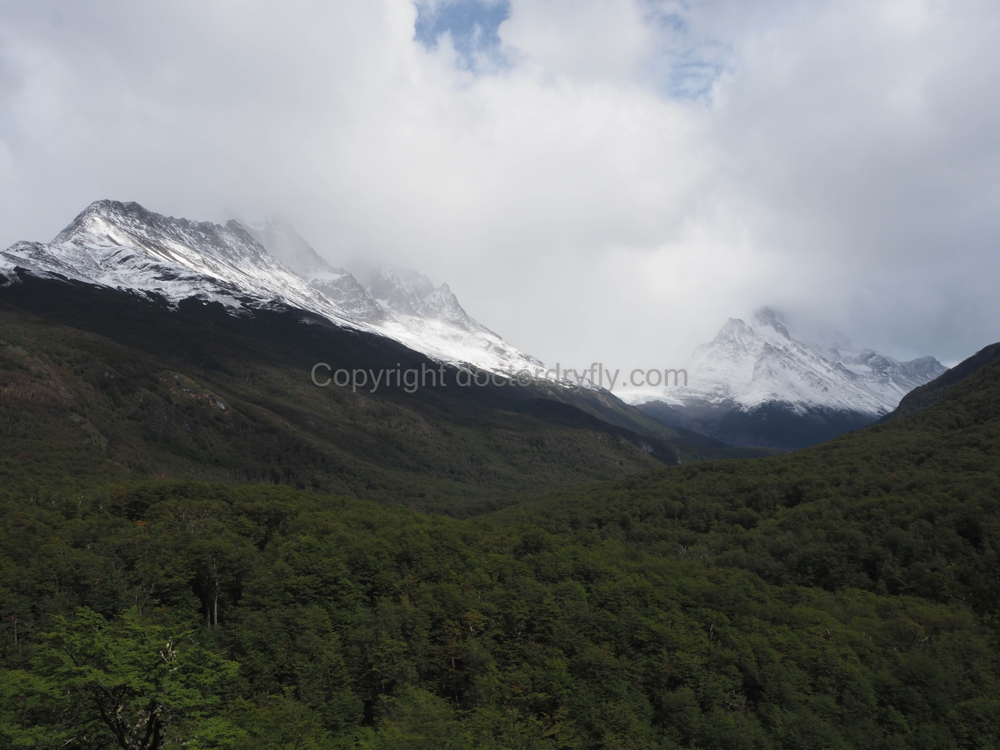
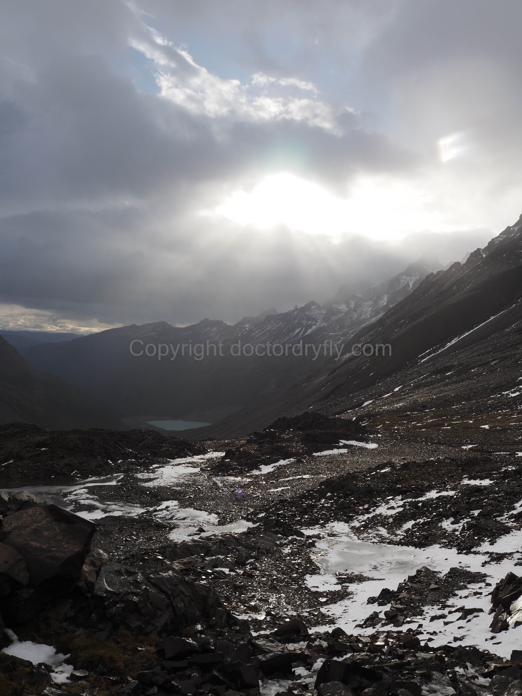
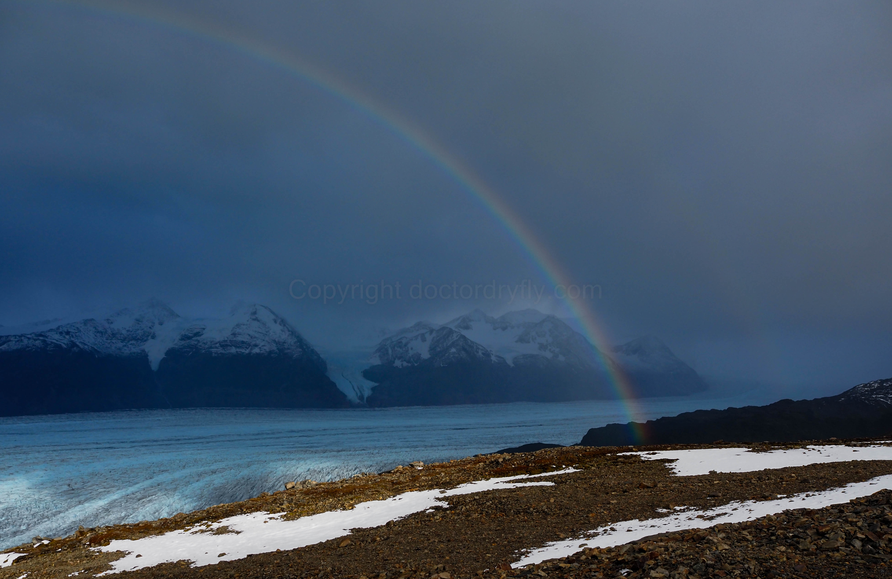
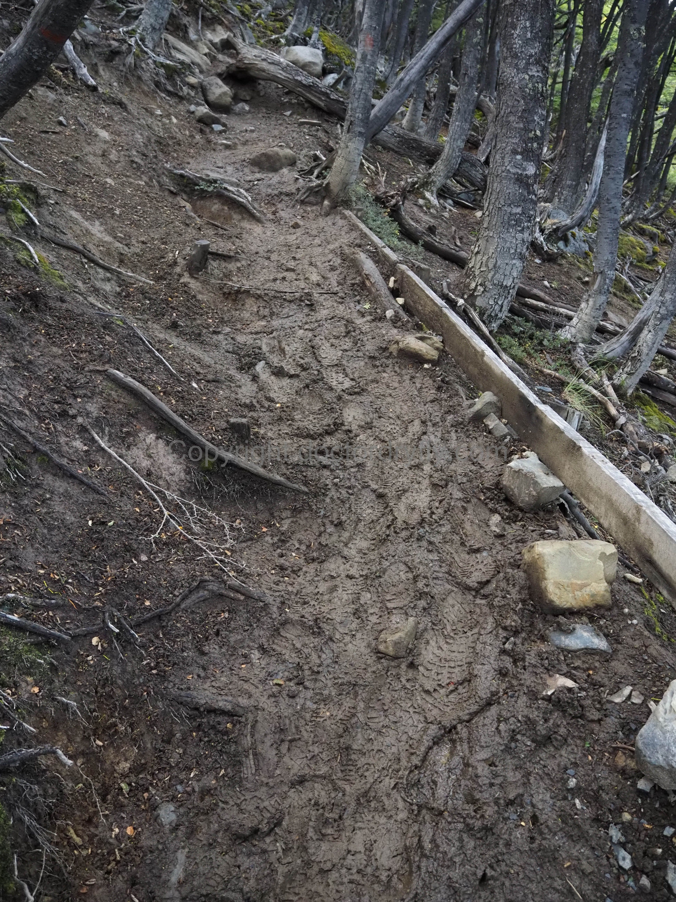
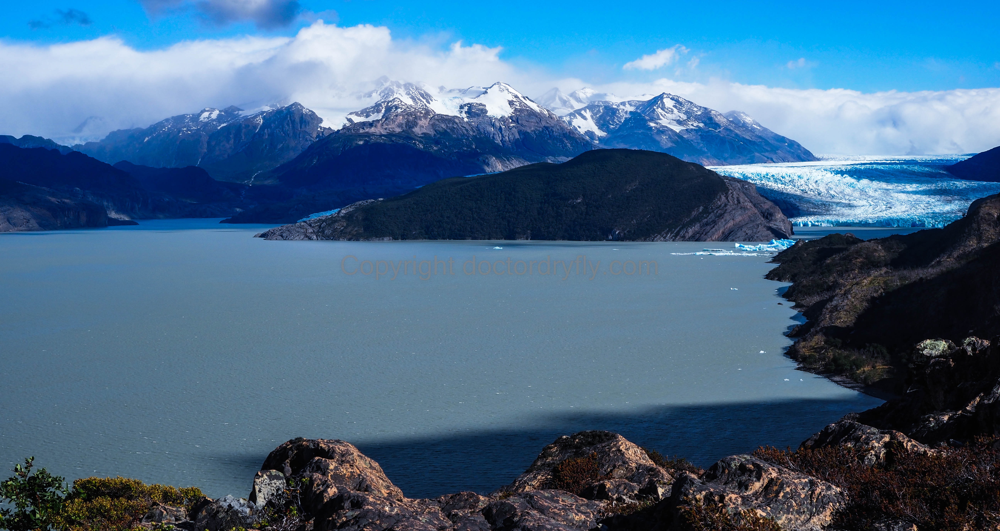
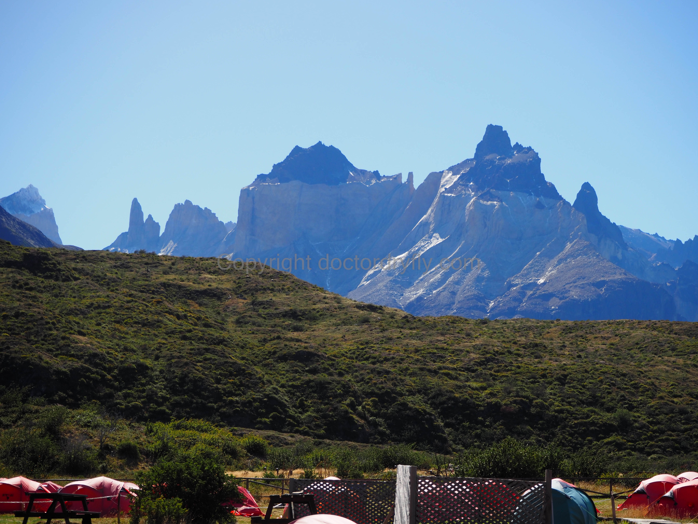
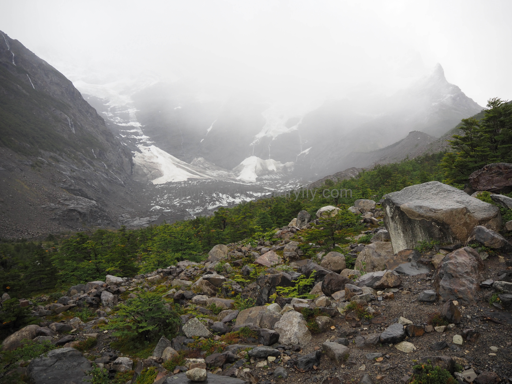

Summary of Our Six Night, Seven Day Hike
Unlike most hikers, we planned to do the hike in six days. We didn’t meet a single other person who had this schedule, so I’ll detail the normal schedule, then what we did. The Caltopo mileage map of our hike is here: O in Six Nights. Note that all information described here reflects my experience in February 2023, but may change–all information should be independently verified.
Most hikers completing the O move from refugio to refugio on the back side. There are more choices on the front side (the part that overlaps with the W), so there things are a little bit more flexible. For our purposes, moving counter-clockwise with the direction of the hike, the back side consists of the refugios of Seron, Dickson, and Los Perros, while the front side (also the W side), consists of Grey, Paine Grande, Frances, and Cuernos. The refugios are a cluster of buildings consisting of a lobby/eating area, a cooking area, a hostel-style dormitory, a minimarket with varying quantity and quality of food, and a designated camping area. All hikers must camp or stay at the refugios–unlike in the U.S., there is no camping where you choose.
Refugios (moving counter-clockwise)
Centro (park entrance, mile 0)
Seron (first refugio from the park entrance, mile 8.27 from Centro excluding hike up to Mirador Base Las Torres)
Dickson (all hikers completing the O must have reservations at either Dickson or Los Perros; most have reservations at both, mile 19.29 from Centro)
Los Perros (all hikers must leave Los Perros by 7am to start over the pass, mile 26.62 from Centro)
Grey (mile 35.65 from Centro)
Paine Grande (mile 42.18 from Centro)
Frances (mile 55.7 from Centro, including hike to Frances, bag drop, up to miradores, back to Frances)
Cuernos (Frances and Cuernos are close to each other and interchangeable for the last night’s stay, mile 57.9 from Centro)
CONAF, the Chilean national forest bureaucracy, manages the park. The refugio system is meant to protect the park, but also manage the visitors. In particular, the Los Perros refugio is essentially used as a staging area for hikers to get over the pass. Thus, the main requirement of the refugio system is that hikers spend the night at Los Perros so they can begin trekking over the pass from Los Perros at 7am. The CONAF rangers close the trail after 7am as the pass is much safer and less windy early in the day, apparently. (I believe this requirement is in place all summer as there were signs along the trail informing hikers of the 7am start time, but I’ve also read in other places that when the weather is better the 7am cutoff does not exist.)
From this requirement, everything flows backwards. Most visitors hike from Centro to Seron, Seron to Dickson, and Dickson to Los Perros so they can be in position to begin the hike over the pass at 7 am. A few miles after Seron, there is a ranger station where the ranger on duty checks reservations to ensure that hikers have reservations at either Dickson or Los Perros. If a hiker does not, they will not let them proceed to the back side of the O. Note, however, that there was no requirement you have reservations at both Dickson and Los Perros (as of February 2023). Technically, it seems like one could camp at Dickson then make it to Los Perros before 7am to cross the pass. That doesn’t make sense though, and it’s much easier to skip Dickson and hike directly from Seron to Los Perros, which seemed to be allowed by the park system, though not by the reservation system (more details on that in the discussion of the refugio section). Also important to note is that you must make Dickson by 2pm to continue to Los Perros. There is a ranger station at Dickson and they close the trail at 2.
After Los Perros, visitors hike from refugios Los Perros to Grey, Grey to Paine Grande, Paine Grande to either Frances or Cuernos (they are within two miles of each other), then out back to Centro, taking a total of seven nights. We took six nights by hiking from Seron to Los Perros, skipping Dickson. Our logic was that the hike from Dickson to Los Perros is listed by most sources as only five miles, though according to Caltopo, it’s closer to 7.5. When we told other hikers we had done this, many of them didn’t even realize it’s allowed. Once you’re over the pass, after Los Perros, anything goes. One could conceivably hike from Grey to Frances/Cuernos without too much trouble, skipping Paine Grande, then out to Centro.
I think the minimum number of nights to complete the trek would be as follows: stay at Centro and hike to Las Torres, Centro to Seron, Seron to Los Perros, Los Perros to Paine Grande, Paine Grande to Centro. This would be only four nights, including a night at Centro to complete Base Las Torres, and would require some super human effort as the mileage doesn’t tell the whole story, so I DO NOT recommend it, but for extremely fit hikers, it seems doable. The hike from Grey to Paine Grande is short and easy, as is the hike from Paine Grande to either Frances or Cuernos. The hike from either of those two back to Centro is not particularly short (about 10 miles), but is relatively easy.
The problem is, the hike from Seron to Los Perros is not easy, nor is the hike from Los Perros to Grey, despite relatively short mileage. We skipped Dickson because it didn’t make sense to us to have a day that was only seven miles (Dickson to Los Perros), but this hike turned out to be much tougher than we expected because of the rain, the mud, and the structure of the trail. Again, most hikers will want to complete the hike in the normal seven nights. Very fit hikers can complete the trek in six nights, while attempting it in any fewer nights should be left to those who can easily do 20+ mile days (again, the mileage on the O doesn’t tell the whole story, for reasons described below).
Hiking Days
Summary of our hiking days, with mileage taken from Caltopo, not from any official trail maps or online publications. Distances given on the infrequent signs on the trail are obviously wrong, so you should ignore them. Time is hours to complete, excluding breaks, though this measure is imperfect and will vary based on conditions.
Day 1: Arrive at park, camp at Centro, hike Base Las Torres and back. 11.78 miles, 3467 ft. total elevation gain, 5.5 hours.
We took a bus that left Puerto Natales at 6:45am and arrived at the park about two hours later, around 8:45. After accomplishing the rigmorole with entering the park and catching the shuttle bus, we walked over to the Centro campsite as we wanted to drop our packs there, and perhaps even reserve our site. It was only about 9:30 am, but they let us check in and instructed us to find a spot without a tent. Unlike U.S. park campsites, there are no designated spots, just an area where you can setup anywhere. We put up our tent to claim our spot and started hiking from there up to Base Las Torres.
Many hikers save the Base Las Torres hike for the end, and hike only to Seron the first day. I prefer our method because it seemed to shorten the trip a little, and we didn’t have to fight the crowds at the end of the hike after we were tired. In terms of hiking difficulty, the stats suggest this is the second most difficult day, though you’re not carrying a backpack. This is the most popular day hike in the park because it basically leaves from the Welcome Center. The trail is crowded with day hikers and we struggled to fight through a lot of slow hikers, many of whom refused to give way to faster hikers.
 Looking up Windy Pass.
From the Welcome Center the trail meanders down the park road until it reaches the Hotel. From there, it’s basically flat until it begins climbing steeply after a bridge. The trail gains a lot of elevation very quickly until reaching Paso del Viento, which provides nice views up the valley and back across the plain. From here, the trail goes downhill to the Chileno refugio, then flattens out a bit, then climbs again steeply. After climbing, the last push to the Las Torres bowl begins, and eventually hikers come out of the trees and begin a steep rocky ascent up a drainage, then cut across the face of the slope until emerging in the bowl at Lago Torres. It’s this last section where the hiking conga-line gets really bad as the trail is steep, narrow, and slow.
 Crowds heading up the last push toward Base Las Torres.
It’s important to begin this hike as early as possible as the weather seems to deteriorate in the afternoon. Even though we took the 6:45am bus, we weren’t able to start hiking until about 10am after taking the shuttle bus, getting the campsite, setting up our tent, etc. By the time we were nearly down, about 3pm, it had started raining near the towers. It’s also important to note that the rangers close the trail to the towers at Chileno after 2pm, and at 4pm, they apparently make everyone start descending.
Day 2: Centro to Seron. 8.27 miles, 1132 ft. total elevation gain, 3 hours.
This is one of the easier hikes on the Circuit. From Centro, the trail steeply climbs some hilly terrain and is a bit up and down for a few miles, eventually dropping into the Rio Paine Grande river basin. It’s obvious when this occurs and if you look closely down into the basin you can see the refugio across a flat meadow that’s a quick hike. The views to the left of the mountains are good (from what I could see), and once you reach the ridge looking down into the valley you get a preview of the next day’s hike. We weren’t able to see all that much as storms rolled in intermittently throughout the day. At the time, the weather was annoying, though this was only a preview of what was to come.
Day 3: Seron to Los Perros. 18.35 miles, 3197 ft. total elevation gain, 8 hours.
After the Seron refugio, the trail climbs into some hills bordering the river, which will be on the right. The trail is a bit up and down here, though mostly up and sometimes quite steeply. Until you are definitively headed west rather than north (for about 2.5 miles), you have not turned the corner and will not start heading down. In this area, there is also a sign that hikers should not proceed without a reservation at either Dickson or Los Perros. Lago Paine will be on the right, and the views from the walk along the top of this hill, looking down at the lake and up the Rio Paine Valley are fantastic. From the top, it’s a pretty easy, though windy, hike across the face of the mountains. The trail drops down into the trees and the ranger check station, to ensure hikers have reservations at either Dickson or Los Perros, is located here. This is probably five or six miles from Seron.
The ranger described the subsequent five or six miles as flat, but it’s more like gently rolling. Still, the hiking is easy and the views get better and better as one approaches Dickson. For us, these last five or six miles to Dickson were the worst on the entire trip because it was absolutely pouring rain and we couldn’t see more than two hundred feet off the valley floor. But, I think the views would have been really good. There is a sign somewhere near the wetland that says Dickson is something like 2 km, but it felt more like 4. The trail climbs a large hill, and upon summitting, you can see Dickson down below. It looks like the trail nearly falls off a cliff, but it’s a steep, short hike down.
 This was typical of our views on the way to Dickson because of the rain.
Most hikers will stop here and spend the night, and we did the approximately 11.5 mile hike to Dickson in a quick four hours, but we were really moving because of the rain. Despite the elevation gain at the beginning, this is a pretty easy hike. The difficulty we had was from Dickson to Los Perros. The trail immediately begins climbing after Dickson and doesn’t stop until Seron. It was complete slop at this point, both from the rain and the previous group of hikers who left from Dickson in the morning. Despite our research and maps telling us this hike is only about five miles, Caltopo suggests it’s more like seven. It took us another four hours to go seven miles, even after we’d just gone more than 11 miles in four hours.
We stopped at Dickson for about an hour to try and dry out, and this was really the low point of the trip for me. I was soaking wet, I knew I had another five or more miles ahead of me, it was still pouring rain and all the views were obscured. Luckily, while we tried to warm up at Dickson, the rain broke just enough so that we were mostly hiking through showers and spritzes the rest of the day, rather than the outright downpour that occurred on the walk to Dickson. We could even see some mountain peaks once we gained elevation after Dickson, and I imagine if it was clear, the scenery would be incredible, reminiscent of the Alps.
 The clouds lifted just enough to give us views like this on the trail between Dickson and Los Perros.
After the initial climb out of Dickson, the trail flattens out a bit, then turns the corner on the drainage and begins another steep climb. The mud here was challenging. A sign indicates the Los Perros refugio was only 2km, but there is no way this is accurate. The trail keeps climbing and everytime you think you’re going to top out and arrive, the trail finds more elevation. Eventually, you can see the side of a bowl in front of you, and the trail climbs through the trees into the bowl, which is Laguna Los Perros and Glacier Los Perros. The view of the lake and glacier is incredible, but it was late in the day for us, the wind was howling, we were soaking wet, and it was still drizzling, so we kept walking. I have no photos of the lake or the glacier, which is unfortunate, but I was in absolutely no mood at the time to stop and get my camera out of my pack. The trail goes up a little more from here, then descends into a small creek drainage, and the refugio is on the left amongst some trees.
The hike was hard in terms of miles and distance, but very doable for hikers with above average fitness, though the mud does not discriminate. On a nice day, I think it would be very pleasant and relatively straighforward, and of course, that was our thought when we planned the trip and decided to skip Dickson. While the scenery around Dickson looked nice, in my opinion the hikes from Seron to Dickson, and then from Dickson to Los Perros, are too easy to justify two separate days. That assumes, of course, that you aren’t hiking in the rain and the mud for nearly eight hours. In retrospect, I’m still glad we didn’t spend two days completing this section of the hike, but it was pretty miserable given the weather.
Day 3: Los Perros to Grey. 9.03 miles, 2816 ft. total elevation gain, 7.5 hours.
The wind absolutely howled all night (when didn’t it?) at Los Perros, and we could hear rain showers smacking our tent. I was legitimately nervous about how the hike over the pass would go. It turned out that I was right to be nervous, as I later learned that the day before, when we were hiking in the rain near Dickson, hikers were crossing the pass in a blinding snow storm. Word around the camp the previous day at Seron was that a big storm was coming in, and I asked one of the workers at the refugio to check the weather and if he thought we’d be able to get over the pass. He told us that the weather looked bad, and it would be a rough hike, both of which he was correct about. He also said that the rangers coordinate with the refugios about weather over the pass, and that it is possible they would close the pass. In that case, hikers would be held at each refugio down the line, though it must take awfully bad weather for the rangers to close the pass.
Luckily for us, despite the bad weather overnight, things cleared for our pass day. It really wasn’t all that cold either. When you stop at Los Perros, you are required to check-in at the ranger station. They warn you about the pass, advise you to leave Los Perros as soon as is feasible, around 6:30am when it begins to get light (in late February), and to follow other groups. The trail itself is also well-marked with orange paint, poles, and blazes, but in a blizzard it might be easy to lose your way (as I later learned).
The trail to the top of the pass is steep, but relatively short. It’s mostly through small trees at the start, which provides some protection from the wind, but annoyingly, it sometimes loses elevation for no good reason. Once the trail emerges out of the trees, it’s pretty much straight up some rocky slopes with a few small creek crossings. The views are nearly indescribable. There is a large glacier on hiker’s right that is at and above your elevation, views down canyon to the peaks below, and craggy mountain peaks above and to the left. This area is really where some switchbacks would be useful as the trail ascends nearly straight up the rocks to small flat areas, then heads up again.
 From near the top of Paso John Garner looking back to Lago Los Perros.
The hike to the pass is only a little more than two miles, and it took us less than three hours total. The initial descent from the pass descends the rocky saddle and you can’t see much of Grey Glacier until it gets steeper. It’s also (of course) very windy. After the initial descent, the trail cuts to the left and Grey glacier comes closer into view. It’s hard to describe the view of the mountains, the glacier, which is much farther below you, and how it appears up and down valley. Unfortunately, the steepness and muddiness of the trail made for a pretty miserable descent, as it was almost impossible not to slip and fall here. The going was really slow and eventually hikers arrive at Camp Paso, with another ranger check-in. The ranger asked me how we were doing, and said there were two meters of snow on the pass the day before, which I found just incredible as there was almost no snow when we ascended. When I asked what happened to all the snow, he shrugged and said, “se va,” it goes. As an aside, I found that with a little bit of Spanish, all the rangers loved chatting hikers up and asking if they were enjoying themselves.
 Once over the pass, the views of Grey Glacier are amazing.
I also made the mistake of asking the ranger how far it was to Grey refugio. I thought it was about 2.5 more miles, and he said it was 10.5 km, or about 6.5 miles. This simply seemed impossible as we’d spent nearly six hours hiking from Los Perros. How had we only gone three miles or so, especially after reaching the top of the pass in a such a short time? The descent from the pass was that bad. Once you arrive at the ranger station, the difficult descent is mostly done, though the trail here is really up and down and still somewhat muddy. The famous suspension bridges are in this area, and I’m glad we didn’t have to do them in strong winds. I couldn’t enjoy them as much as I wanted because I was ready to be done with the hike.
 Steep and muddy all the way down.
We arrived at Grey around 3pm, which means we hiked for about eight hours and fifteen minutes, covering only nine miles. This was the first day I truly felt tired after the hike, and I thought that despite the short distance, it was by far the most difficult day. I spoke to other hikers at the refugio, and they confirmed that the hike was more difficult than they had imagined. And, surprisingly, it wasn’t the hike up to the pass, but down from the pass that was hard. In terms of day difficulties, this ranked first, with the previous day, more than 18 miles from Seron to Los Perros, a distant second. It was just impossible to move with any kind of urgency descending from the pass in the mud, then hiking another six miles or so constantly going up and down.
A few days later, I spoke to another hiker who had climbed the pass the day before us. I still found the ranger’s statement about there being two meters of snow on the pass unbelievable, but my hiker friend said he summitted the pass in a blizzard. All the warnings the rangers had given us at Seron actually applied to him as he said he couldn’t see a thing, it was snowing hard, and the wind was sideways. Part of his thumb was still numb from the experience. This strikes me as unusual, but given the rain and cold we had down low, it isn’t hard for me to imagine how bad the pass could have been. He also said a ranger was ascending the other side of the pass as he was coming down, checking on people, making sure they were okay, and helping guide them down. I don’t think the CONAF rangers play fast and loose with people’s safety on the pass, and I do think they check conditions regularly, but it also seems like they want to keep the line moving. For the vast majority of hikers, this will never be an issue, but bad luck does strike, and those hikers were in a difficult situation.
Day 4: Grey to Paine Grande. 6.53 miles, 1221 ft. total elevation gain, 3 hours.
An easy day, and boy did we need it after the previous two. This was our second day of good weather and the hiking was crisp. After the steep descent from the pass, the trail more slowly descends toward the lake and glacier, before and after Greys. The views are really spectacular, and you get different perspectives of the glacier by starting way above it, then closer to it, then moving past it and looking back on it. This day was so clear, we could see more of the mountains on the other side of Lago Grey. This was perhaps my favorite day of the hike.
From Grey, the trail is mostly flat (at least relatively to the previous day) until it climbs steeply but shortly up to a small little drainage on the side of a cliff. There is some minor exposure here, as there was on the previous day. I don’t like exposure at all, but this was really minimal, though not nothing. I think for most people, the suspension bridges will be a little scarier than the exposure. It’s repetitive to talk about the views again, so I’ll just say they were indescribable, with the lake, the mountains, and the glacier in the distance. Just when you’re cursing the trail, the weather, the government of Chile, other hikers, the people you’re with, the refugios, and basically anything else you can think of, the O delivers a day like this.
 What a view, between Grey and Paine Grande.
Eventually the trail descends steeply down a canyon and O hikers meet more and more W hikers coming up from Paine Grande. At the end of the canyon, on Lago Pehoe, is the Paine Grande refugio. Paine Grande, the peak, along with the Cuernos, tower over the refugio. Unfortunately, the refugio is located at the exact base of the canyon for maximum wind exposure, though that’s the least of this refugio’s problems. I’m glad we had some time here because we finished hiking early and the views up to the peaks are spectacular, as are the views looking across the lake.
Day 5: Paine Grande to Frances, including Mirador Britanico. 13.52 miles, 3512 ft. total elevation gain. We completed only about eight miles of this, in about 3 hours. The time is difficult to determine because we waited at various points to see if the weather would clear.
We’d had two days of nice weather so it was inevitable our luck would run out. While we started the day from Grey to Paine Grande in bright sunshine, by that night it had clouded up completely and it was clear another storm was moving in. It started raining that night quite hard, and we awoke in the morning to intermittent, but heavy showers. The forecast as posted in the refugio suggested it would clear up, but unfortunately it never did.
 The Paine Grande refugio has its issues, but the view can’t be beat.
Our original plan was to hike from Paine Grande to Italiano, which is not a proper refugio but two buildings with some shelter. I don’t think there is much else there, but I’m not entirely sure about that. From there, the trail splits, with one direction of it going up into the canyon to provide views of the Frances glacier and the Cuernos, and the other going to Frances refugio. Shortly after Frances, about two more miles, is Cuernos refugio. Our original plan was to drop our packs at Italiano, hike up to the overlooks, then back down, grab our packs and continue the mile or so to Frances. We’d originally wanted to camp at Cuernos as it was closer to our exit the next day, but it was fully booked so we were stuck at Frances, in one of the “fancy” canvas tents.
The hike from Paine Grande to Italiano is easy. Immediately out of Paine Grande refugio, there is a short and easy climb, then it is mostly small, rolling terrain, passing by a small lake and descending slightly toward Italiano. These four and a half miles or so took us only about two hours, though we left later in the morning because we were trying to wait out the weather. That didn’t work, and we hiked a lot of this in rain, though it wasn’t as bad as the rain to Dickson.
Even before you arrive at Italiano, you can see up-valley enough to get glimpses of Frances glacier. Unfortunately, it was raining harder on the mountains and glacier, and they were totally socked-in. We decided to continue hiking to Frances refugio, drop our packs, shelter in the tent, and hopefully wait the storm out, before back-tracking to Italiano to hike up to the miradores, hopefully in better weather. It’s an initial uphill from Italiano to Frances, then a downhill, but the distance is short. Besides, given the weather, there seemed to be no point to going up to the miradores. Of course, when we arrived at Frances, about 12:30pm, the person working there told us we couldn’t check in until 2:30. Check-in times had not been enforced at all in the previous refugios, but now that we desperately wanted a place to shelter and dry-off, we couldn’t. He very clearly told us we couldn’t check-in until 2:30, though he actually opened the window and began allowing check-ins about 1:30, so were able to claim our canvas, $200 a night tent.
At about 2pm, we decided to hike back to Italiano and see if we could get some views. It was clear at this point that the weather was not going to clear, and I feared it was pointless trying to go up the canyon to Frances and Britanico. Indeed, we got back to Italiano, we waited out a heavy rainstorm, and began hiking up. According to a sign posted at Italiano, the rangers close the trail up Miradores Frances and Britanico at 3pm, and we started hiking at 2:30. We just couldn’t wait any longer, and it increasingly appeared futile. We went maybe a mile, saw the very bottom of the glacier, and hiked down. We also couldn’t see anything up-canyon or the Cuernos and it was raining steadily. What a disappointment.
 Our best view of Frances glacier.
It absolutely poured all night long, and though I was initially upset that we paid for the fancy tent during the booking process, it was nice to keep all of our stuff, and ourselves, dry. I’m not sure it was $200 nice, but I can’t complain about the heavy canvas and lots of storage space inside the tent. It also got noticeably colder with the passage of the front, and it was much easier to pack up in the morning inside the canvas tent rather than wrestling with our bags under our backpacking tent’s rainfly.
Day 7: Frances to Centro. 10.15 miles, 1731 ft. total elevation gain.
The next day we had to hike out from Frances. We knew it was about 10 miles, but we were uncertain about mud and trail conditions, especially because it had rained hard all night and we were traumatized from the mud on the previous days. As a result, we left very early, about 7:30am, to make a bus at 3pm. We’d heard different rumors about the shuttle schedule from the Welcome Center back to the entrance station at Laguna Amarga, with one hiker telling us that it came every 20 minutes, while other hikers suggested it was far less frequent. Because we didn’t know the shuttle schedule, we were worried that if we missed a shuttle at say, 2pm, there might not be another shuttle until 2:30, which would mean arriving at 2:45 at the earliest, potentially cutting it close (we later learned the shuttle schedule, as explained here).
It turns out we didn’t need any extra motivation to haul ass out of Frances. The pouring rain, the cold, and the wind meant we were more than ready to be done with the hike. I was willing to run back to Centro if I had to, in order to make the bus. The hike itself was actually quite easy. The rain eased up enough that we could see some small portion of the peaks near the Cuernos, and on the southeast side of the park.
From Frances the trail drops steeply to lake level where there is a short beach walk, then climbs a little to Cuernos refugio. After the refugio, it goes over a small ridge and begins an up-and-down trek through the hills at the base of the mountains. It wasn’t particularly muddy, but there were a lot of small creeks running down the trail. Based on the trail structure, I think these creeks are more or less permanent features of the trail, and like most days, it was really hard to keep your boots dry. One piece of advice I’d offer for other hikers is to bring lots of extra pairs of socks and good waterproof boots.
Once we turned the corner on Lago Nordenskjold, the hiking was easy, and I knew we were close when we began running into W hikers coming the other direction from Centro. I was surprisingly tired by the time we got back to the hotel area and trail junction with the Mirador Las Torres trail. The distance covered wasn’t that much, and it was fairly easy hiking, so I think my legs were worn out from the start of the hike when I was almost literally running back to Centro to ensure we made the bus and beat the rain. We covered some of the same ground we did on that first day near the end of the hike, though there were far fewer people going up to the Towers. Even though the rain stopped and the clouds lifted for much of this hike, the rain moved in again just as we returned to the Welcome Center and it began pouring. Our hike was over, and on this day we barely even got wet!
We arrived at the Welcome Center about 12:30, and had to wait until 2pm for the shuttle, then sat on the bus from 2:30pm to 3, until it left for Puerto Natales.
Additional Info
In my opinion, guides are not at all necessary unless you really, really want to be in a tour group with others. It’s impossible to lose the trail, with maybe the exception of going over the pass in really bad weather. It’s unlikely weather will be that bad, but hikers basically all go over together so by paying attention and watching others there shouldn’t be any issues.
Trail signs are not accurate and should be ignored.
There were plenty of mosquitoes on the backside. They weren’t a problem for us because it was rainy and windy the entire time, but in good weather they could be an issue.
We tried to avoid drinking the water without filtering or boiling first. Everyone kept saying it was fine, but sorry, I just didn’t want to take the chance. Most of the tap water at the refugios appeared to just be water straight from the creeks with varying degrees of clarity.
As the hike description makes clear, it isn’t necessary to carry that much water because there is water on the trail everywhere.
Bring your own soap and toilet paper.
It is helpful to have all your reservations, bus tickets, and confirmation emails printed out. As noted, these were mostly not checked at the refugios, but the rangers checked them and I wouldn’t trust the refugio system to have an accurate accounting of your food and tent reservations on hand.
All the refugios take credit cards though it’s useful to have cash on hand for the shuttle bus and if the credit card machines go down, which happened a few times.